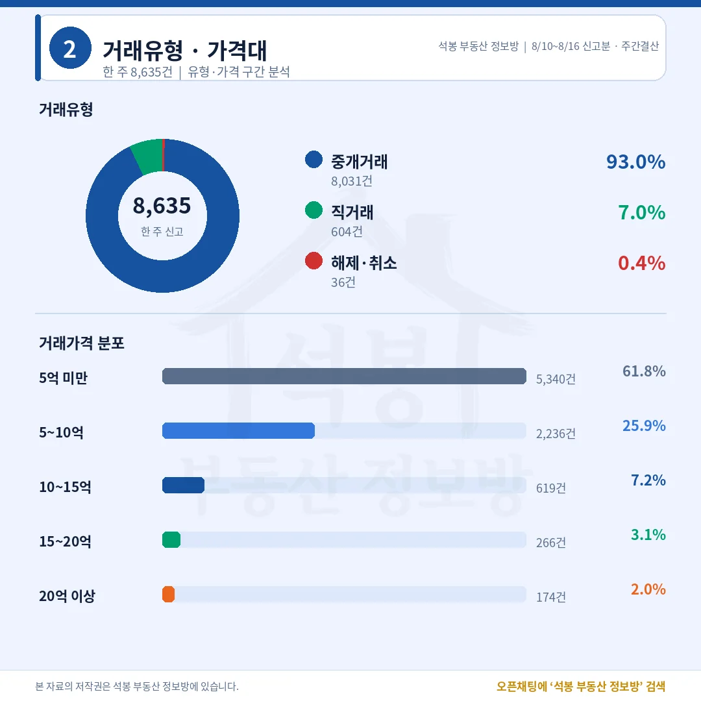
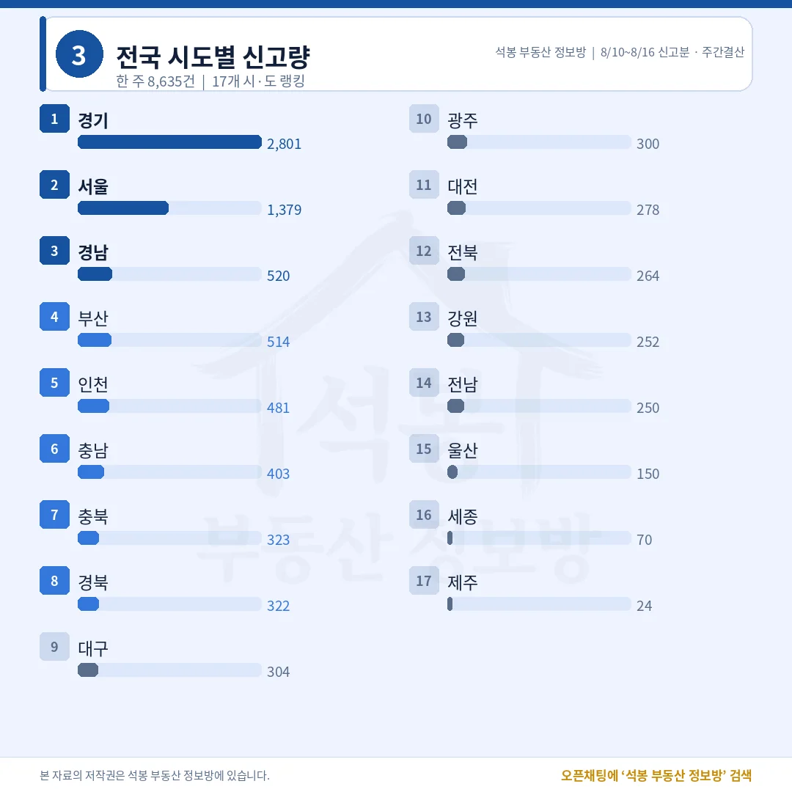
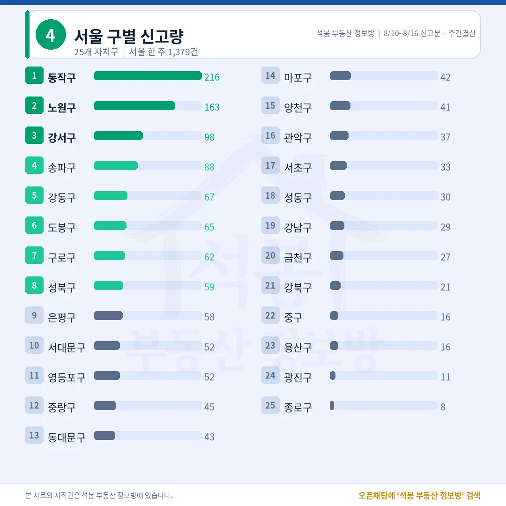
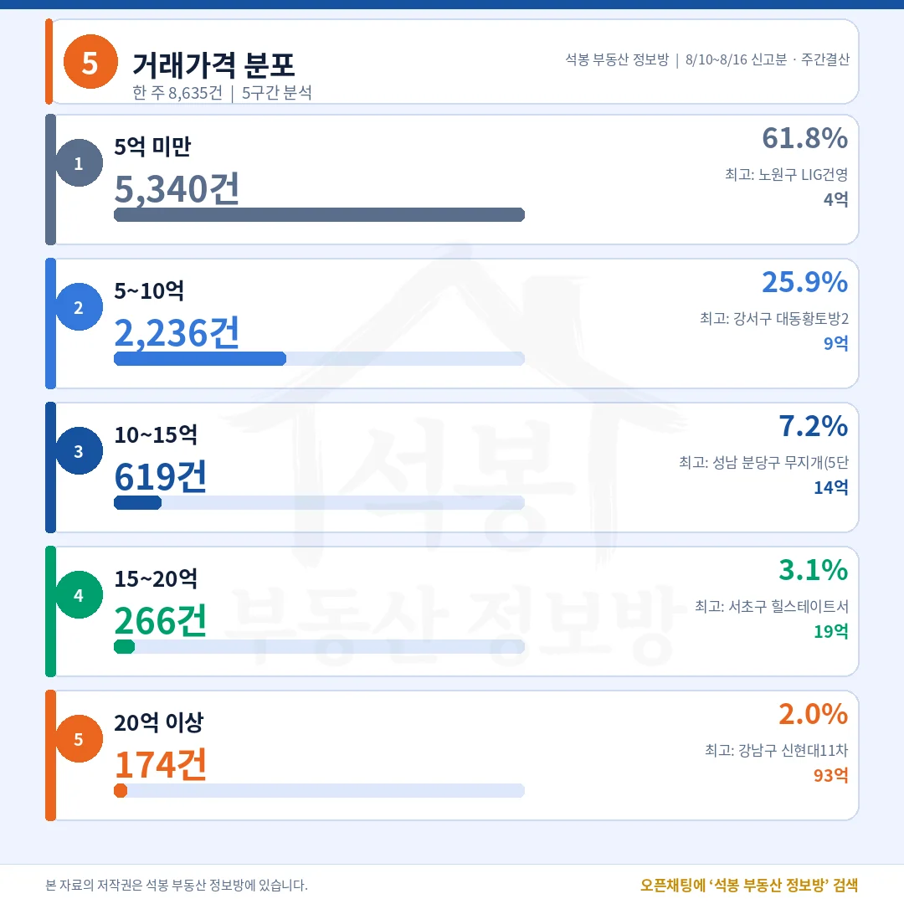
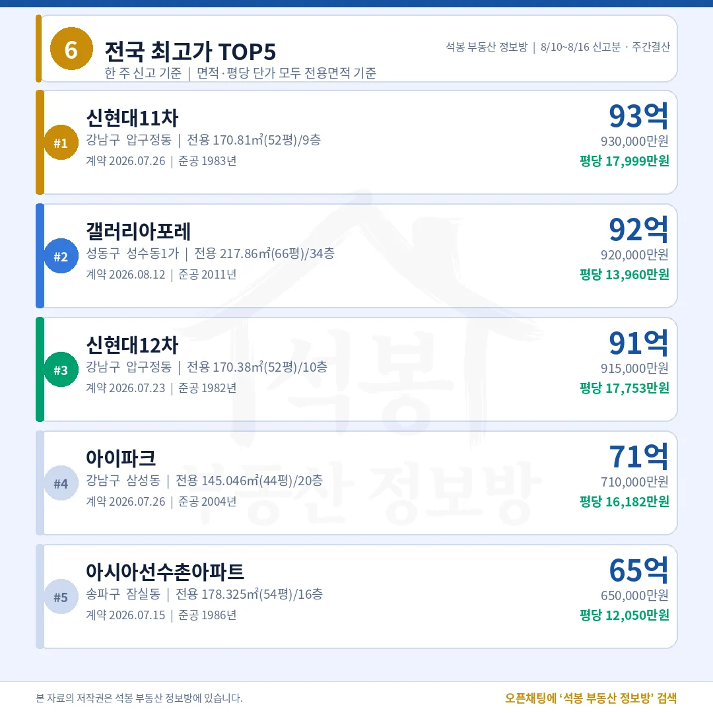
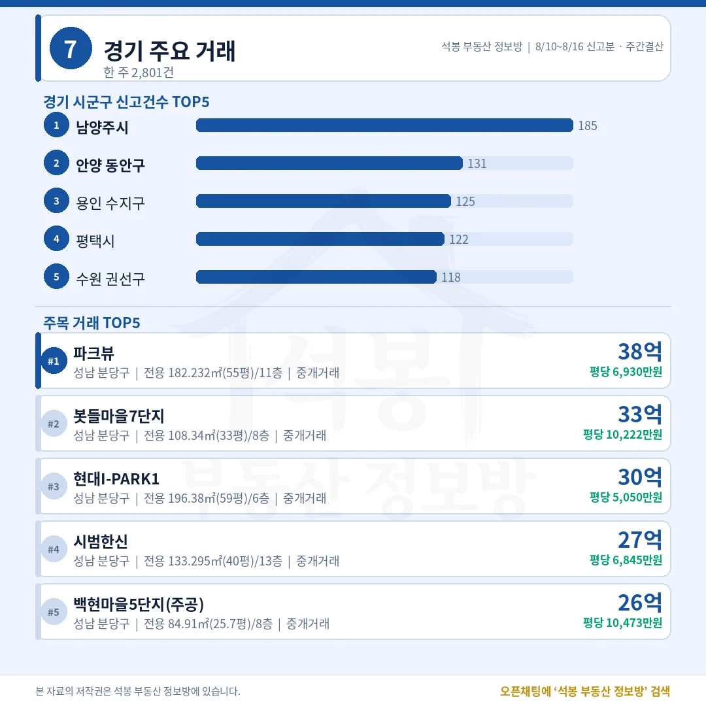
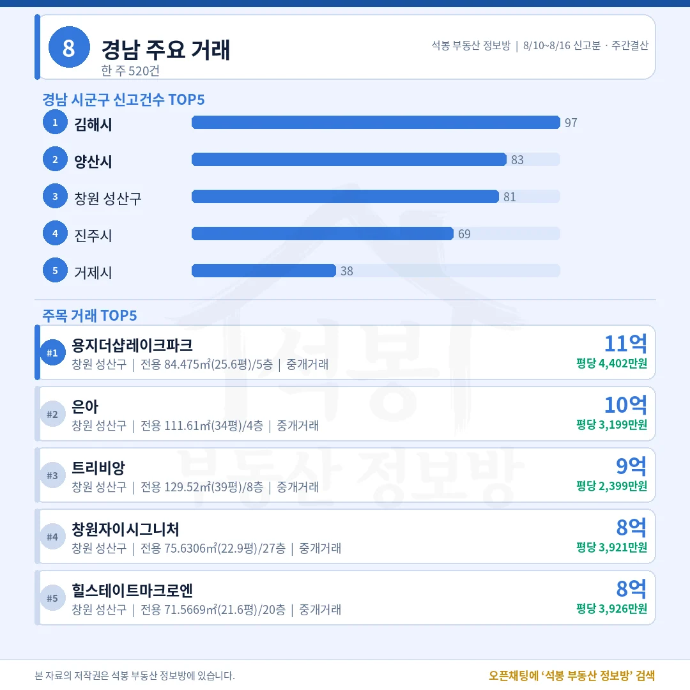
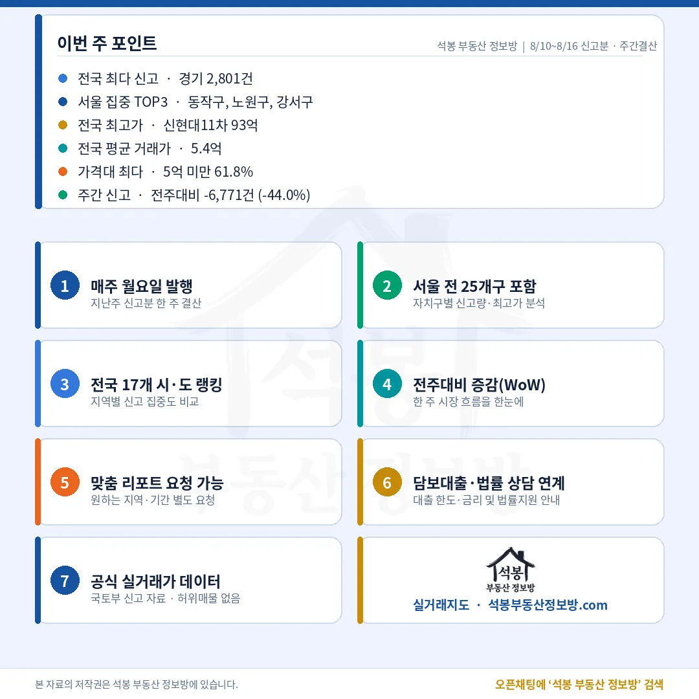

8월 10일부터 16일까지 전국 아파트 실거래 신고는 8,635건이었습니다. 카드에 적힌 전주대비 -44.0%를 그대로 읽으면 시장이 반토막 난 것처럼 보이지만, 지난주 숫자에는 새로 편입된 지역의 지난달 계약분이 한꺼번에 섞여 있었습니다. 서울 1위로 올라온 동작구 216건에도 비슷한 사정이 있습니다. 이번 주 결산은 그 두 숫자를 바로잡는 것부터 시작하겠습니다.
단지명을 누르면 그 단지의 실거래 내역과 시세를 바로 볼 수 있습니다. (면적과 평당 단가는 모두 전용면적 기준)
표면은 -44.0%, 같은 지역끼리는 +15.1%

거래유형·가격대
지난주 15,406건 중 8,321건이 새로 편입된 지역의 7월 계약분이었습니다.
비교 기준
전주 8/3~8/9
이번 주 8/10~8/16
증감
전체 신고 건수 (카드 표기)
15,406건
8,635건
-44.0%
기존 129개 시군구만 추려서 비교
5,808건
6,683건
+15.1%
8월 5일에 수집 지역이 129곳에서 243곳으로 늘면서 새 지역의 지난달 계약분 8,321건이 하루에 몰려 들어왔습니다. 그 몫을 빼면 거래는 줄지 않았습니다.
여기서부터는 회원에게 보여드립니다
카카오 로그인 3초면 전문을 읽을 수 있습니다. 무료입니다.
가입하시면 지역 시장조사 보고서(약식)를 2회 무료로 요청하실 수 있습니다.
이미 회원이면 같은 버튼으로 로그인만 됩니다
중개 93.0%, 5억 미만이 5,340건
10건 중 6건이 5억 아래, 20억 위는 174건으로 2.0%입니다.
거래유형
건수
비중
중개거래
8,031건
93.0%
직거래
604건
7.0%
해제·취소
36건
0.4%
가격대
건수
비중
구간 최고 거래
5억 미만
5,340건
61.8%
노원 중계동 LIG건영 4.99억
5~10억
2,236건
25.9%
강서 등촌동 대동황토방2 9.98억
10~15억
619건
7.2%
분당 구미동 무지개5단지 14.99억
15~20억
266건
3.1%
서초 신원동 힐스테이트서초젠트리스 19.9억
20억 이상
174건
2.0%
강남 압구정동 신현대11차 93억
전국 중위 거래가는 3.98억, 서울은 9.53억입니다. 구간 최고가 셋(4.99억·9.98억·14.99억)이 경계선 바로 아래에 붙어 있습니다.
경기 2,801건, 서울 1,379건

전국 시도별 신고량
수도권 4,661건으로 54.0%, 나머지 절반 가까이가 지방에서 나왔습니다.
시도
신고
중위 거래가
시도
신고
경기
2,801건
5.00억
충남
403건
서울
1,379건
9.53억
충북
323건
경남
520건
2.32억
경북
322건
부산
514건
3.60억
대구
304건
인천
481건
3.70억
광주
300건
경남 2.32억과 서울 9.53억은 네 배 차이입니다.
동작구 216건 가운데 65건이 한 단지, 한 날짜

서울 구별 신고량
그 65건을 빼면 서울 1위는 노원구 163건으로 바뀝니다.
자치구
신고
중위 거래가
비고
동작구
216건
12.50억
노량진동 한강더퍼스트타워 65건 제외 시 151건 · 중위 14.80억
노원구
163건
6.28억
최다 단지 6건 · 쏠림 없음 실질 서울 1위
강서구
98건
10.05억
최다 단지 5건
송파구
88건
21.70억
주공5단지 8건 서울 자치구 중 중위 최고
강동구
67건
12.58억
최다 단지 4건
도봉·구로 성북
65·62 59건
5.50·6.85 9.50억
쏠림 없음
한강더퍼스트타워 65건은 전용 18.01㎡(5.4평) 신축(2026년 준공) 소형으로, 매도자는 전부 법인, 매수자는 전부 공공기관이고 계약일도 7월 27일 하루로 같습니다. 3.35억에서 3.57억 사이 일괄 매입입니다.
압구정 93억, 20억 위 174건 중 154건이 서울

거래가격 분포

전국 최고가 TOP5
총액 1위와 평당 1위가 같은 주는 오랜만입니다.
단지
위치
거래가
전용면적
평당(전용)
1 신현대11차
강남 압구정동
93억
170.81㎡ (51.7평)
17,999만 1983년
2 갤러리아포레
성동 성수동1가
92억
217.86㎡ (65.9평)
13,960만 2011년
3 신현대12차
강남 압구정동
91억
170.38㎡ (51.5평)
17,753만 1982년
4 아이파크
강남 삼성동
71억
145.05㎡ (43.9평)
16,182만 2004년
5 아시아선수촌 아파트
송파 잠실동
65억
178.33㎡ (53.9평)
12,050만 1986년
20억을 넘긴 174건은 송파 50건, 강남 19건, 서초 16건, 동작 14건, 분당 13건 순입니다. 5위 아시아선수촌아파트는 1986년 준공인데 평당 12,050만원으로 2011년 준공 갤러리아포레에 근접합니다.
남양주 185건, 김해 97건

경기 주요 거래

경남 주요 거래
경기는 남양주가, 경남은 김해가 물량을 끌었지만 값의 무게중심은 다른 곳에 있습니다.
지역
신고
중위 거래가
최다 단지
경기 남양주시
185건
4.58억
한강우성 6건
경기 안양 동안구
131건
7.95억
삼성래미안 9건
경기 용인 수지구
125건
9.88억
성복역롯데캐슬클라시엘 5건
경기 평택시
122건
3.29억
e편한세상지제역 6건
경남 김해시
97건
2.03억
-
경남 창원 성산구
81건
3.90억
-
건수 1위 남양주(4.58억)와 3위 용인 수지구(9.88억)의 중위 거래가는 두 배 넘게 벌어집니다. 경남도 건수는 김해(2.03억)가 많지만 값은 창원 성산구(3.90억)가 앞섭니다.
다시 써야 할 두 숫자, -44.0%와 216건

이번 주 포인트
구분
보이는 숫자
실제로 읽어야 할 숫자
주간 증감
-6,771건 (-44.0%)
같은 지역 기준 +875건 (+15.1%)
서울 1위
동작구 216건
노원구 163건 (동작 실질 151건)
지난주 통계에서 배울 것은 시장의 방향이 아니라 숫자를 다루는 방법에 가깝습니다. 수집 범위가 129개 시군구에서 243개로 넓어지면 그 주 건수는 한 번 크게 부풀고, 다음 주에는 그만큼 꺼진 것처럼 보입니다. 두 주를 그냥 빼면 시장이 반토막 났다는 결론이 나오지만, 양쪽에 다 있는 지역만 골라 견주면 875건이 늘었습니다. 늘고 줄었다를 말하려면 분모부터 같아야 합니다.
동작구도 같은 이야기입니다. 216건 중 65건은 공공기관이 신축 소형을 하루에 사들인 기록이라, 그 구에 실수요가 몰렸다는 신호로 읽으면 곤란합니다. 이 물량을 걷어내면 동작구 중위 거래가는 12.50억에서 14.80억으로 올라가는데, 소형 저가 물량이 통계를 눌러 앉히고 있었다는 뜻입니다. 흑석동 아크로리버하임 전용 59.58㎡(18.0평)가 25.8억에 팔린 것도 이번 주 동작구 거래였습니다.
표 보는 법 · 직거래는 중개사를 끼지 않고 당사자끼리 한 거래입니다. 면적과 평당 단가는 모두 전용면적 기준이고, 평은 ㎡를 3.3058로 나눈 값입니다. 중위 거래가는 금액순으로 줄 세웠을 때 한가운데 값이며, 중위·평균은 해제·취소분을 빼고 계산했습니다. 건수와 비중은 카드와 같은 전체 신고 기준입니다.
원자료: 국토교통부 실거래가 공개시스템 (2026년 8월 10일~16일 신고분 기준, 전국 아파트 매매 8,635건) · 집계 기준일 2026-08-17 · 편집·제작: 석봉 부동산 정보방 · 신고분은 계약일과 신고일이 다를 수 있고 해제·취소가 뒤늦게 반영될 수 있습니다 · 전주 비교는 8월 5일 수집 지역 확대(129→243개 시군구)로 분모가 달라 기존 129개 시군구만 추려 별도 계산했습니다 · 본 자료는 정보 제공 목적이며 투자 권유가 아닙니다.